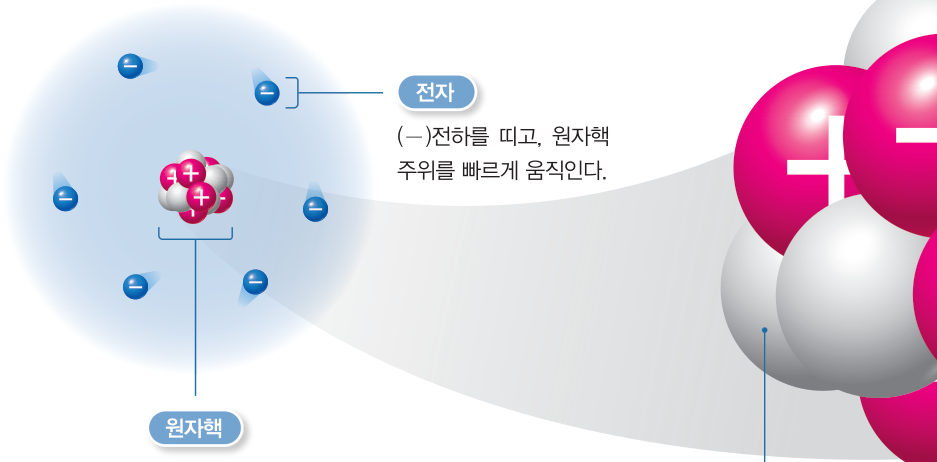
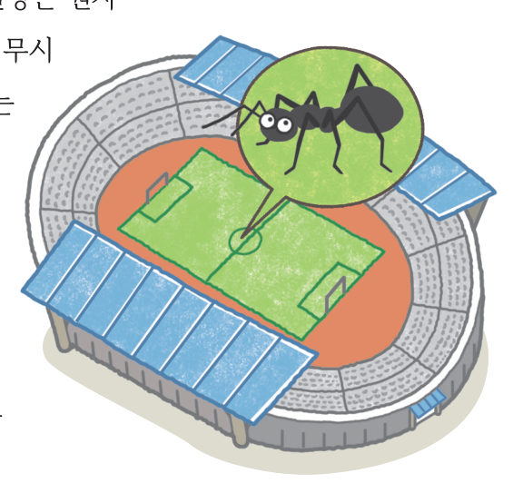
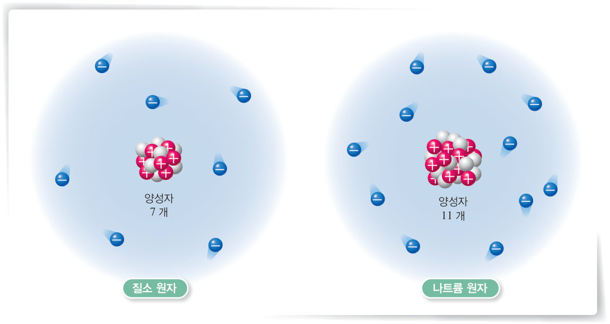
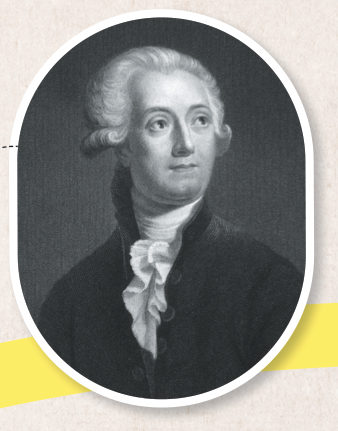
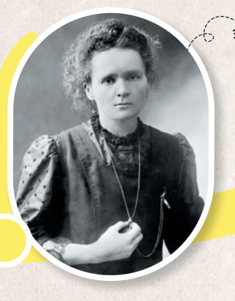

“나는 어디로 가게 될까?” “철로 가세요.” 원소의 종류는 무엇으로 구분될까? 3D 원자 만들기로 양성자, 중성자, 전자를 넣고 빼면서 원소가 바뀌는 순간을 찾아보자.
🎯 이 단원을 배우면 — 원자가 양성자, 중성자, 전자로 구성됨을 설명하고, 양성자 수에 따라 원소의 종류가 달라짐을 입자 모형으로 설명할 수 있다.
교과서원자는 무엇으로 구성되어 있을까? 138~139쪽
원자는 중심부에 크기가 매우 작은 원자핵이 있고, 원자핵은 양성자와 중성자로 이루어져 있다. 양성자는 (+)●전하를 띠고 있지만 중성자는 전하를 띠지 않는다. 전자는 (-)전하를 띠고 있고, 원자핵 주위에서 빠르게 움직이며 분포하고 있다. 원자를 이루는 양성자 수와 전자 수는 같고 원자는 전기적으로 중성이다.
원자핵의 질량은 원자 질량의 대부분을 차지한다. 전자의 질량은 무시할 수 있을 정도로 매우 작고, 한 원자에 있는 전자는 다른 원자로 이동할 수 있다. 원자핵은 원자에 비해 매우 작고 원자 내부의 공간은 대부분 비어 있다. 원자의 크기를 축구 경기장에 비유하면 원자핵의 크기는 경기장 바닥의 개미 한 마리에 비유할 수 있다.
●전하 전기 현상을 일으키는 것으로 (+)전하와 (-)전하가 있다.

그림 4-7원자의 구조 — 원자핵(양성자, 중성자)과 전자

그림 4-8원자와 원자핵의 상대적 크기 — 축구 경기장과 개미
해 보기 · 모형 개발 및 이용하기원소의 종류가 다양한 까닭 알아보기 140쪽
원소마다 성질이 서로 다른 것은 원소를 구성하는 원자의 종류가 원소에 따라 다르기 때문이다. 원자는 종류에 따라 양성자 수가 다르다. 질소 원자는 양성자가 7 개이고 나트륨 원자는 양성자가 11 개이다(그림 4-9).

그림 4-9질소 원자와 나트륨 원자의 구조
3D 원자 만들기양성자·중성자·전자를 넣고 빼 보자
버튼으로 입자를 더하거나 빼면 3D 원자가 바뀌어요. 양성자 수가 바뀌면 원소 이름이 바뀌고, 전자 수만 바뀌면 전하를 띠게 돼요. 드래그해 돌려 보세요.
원소-
양성자 / 중성자 / 전자-
전체 전하-
1원자 모형을 완성하며 표를 채워 보자.
원자
리튬
붕소
산소
양성자 수
전자 수
2양성자와 전자 중 다른 원자로 이동할 수 있는 것은 이다. 원소의 종류는 수에 따라 달라진다.
🧩 첫 번째 블록 · 힌트 조각 2 (140쪽)
나트륨과 염소는 ( ) 수가 달라 서로 다른 종류의 원소이다.
스스로 확인하기138쪽 학습 목표를 달성했는지 확인해 보자 140쪽
1개념 확인 원자는 (+)전하를 띠는 ( ), 중성자, (-)전하를 띠는 ( )(으)로 구성된다.
2사고력 원자의 구조를 태양과 태양 주위를 도는 행성에 비유할 때, 태양은 , 행성은 에 해당한다.
과학이 톡미지의 세계를 밝히는 원소 발견 이야기 141쪽

라부아지에

퀴리
캐번디시는 산과 철의 반응에서 공기보다 훨씬 가벼운 기체를 발견했고, 1783 년 라부아지에는 이 기체에 ‘물을 형성하는 자’라는 뜻의 수소(Hydrogen)라는 이름을 붙였다. 1898 년 퀴리는 방사성 원소인 폴로늄을 발견했다. 인공 원소에는 아인슈타이늄, 멘델레븀처럼 과학자의 이름을 붙이기도 한다.
💬새로운 원소의 이름과 원소 기호 만들기 내가 과학자가 되어 새로운 원소를 발견했다면 이름과 원소 기호를 무엇으로 정할지, 그 까닭과 함께 써 보자. (원소 기호 규칙을 지켜요.)
5분 테스트다양한 원소의 종류
1원자를 구성하는 입자를 모두 고르시오.
2원자의 중심에 위치하는 것은 이다. 구성 입자 수에 따라 원소의 종류가 달라지는 입자는 이다. 원자는 전기적으로 이다. 원자는 직접 눈으로 관찰할 수 없기 때문에 을 사용하여 나타낸다.
✔옳으면 O, 옳지 않으면 X
⑥ 원자의 중심에 전자를 표시한다.
⑦ 원자핵 주위에 전자를 배치한다.
⑧ 전자는 한 곳에 모여 있도록 배치한다.
⑨ 전자의 개수는 원자의 종류에 관계없이 똑같이 표시한다.
10수소, 리튬, 탄소, 산소 원자를 양성자 수가 많은 순서대로 놓으시오.
리튬 원자
수소 원자
산소 원자
탄소 원자
스스로 정리하기다양한 원소의 종류 148쪽
3다양한 원소의 종류
⑴ 원자의 구조: (+)전하를 띠는 , 전하를 띠지 않는 중성자, (-)전하를 띠는 (으)로 구성된다. ⑵ 원자의 수에 따라 원소의 종류가 달라진다.
평가 기준
스스로 평가
지식·이해 원자가 양성자, 중성자, 전자로 구성됨을 설명할 수 있는가?
가치·태도 모형으로 원자를 나타내며 과학에 흥미를 느꼈는가?
제출학생 정보 · 제출하기
모든 활동을 마친 뒤 제출하면 전체가 한 번에 채점되고 피드백이 나타나요. 답안은 선생님 스프레드시트(중2 탭)에 기록돼요.